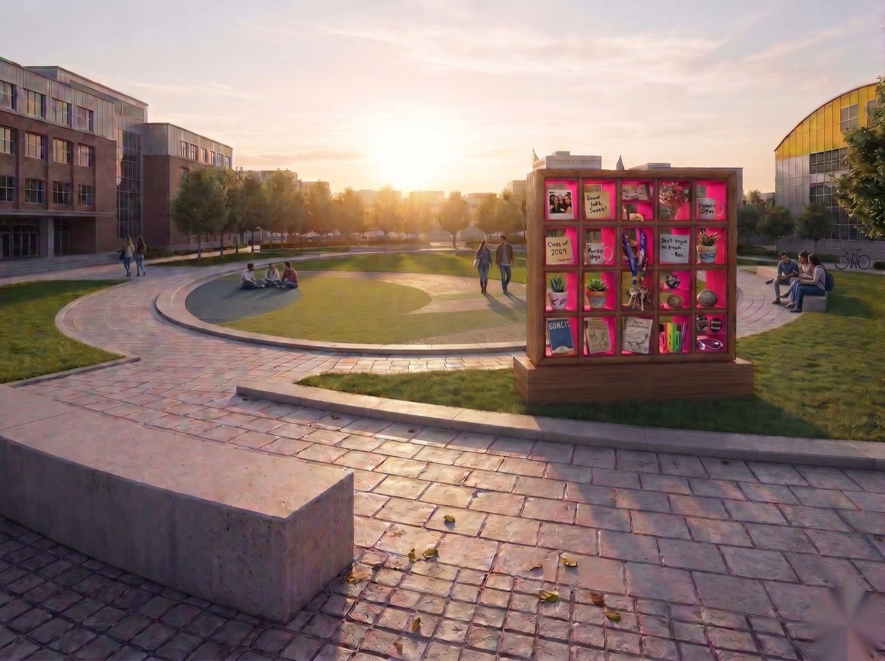
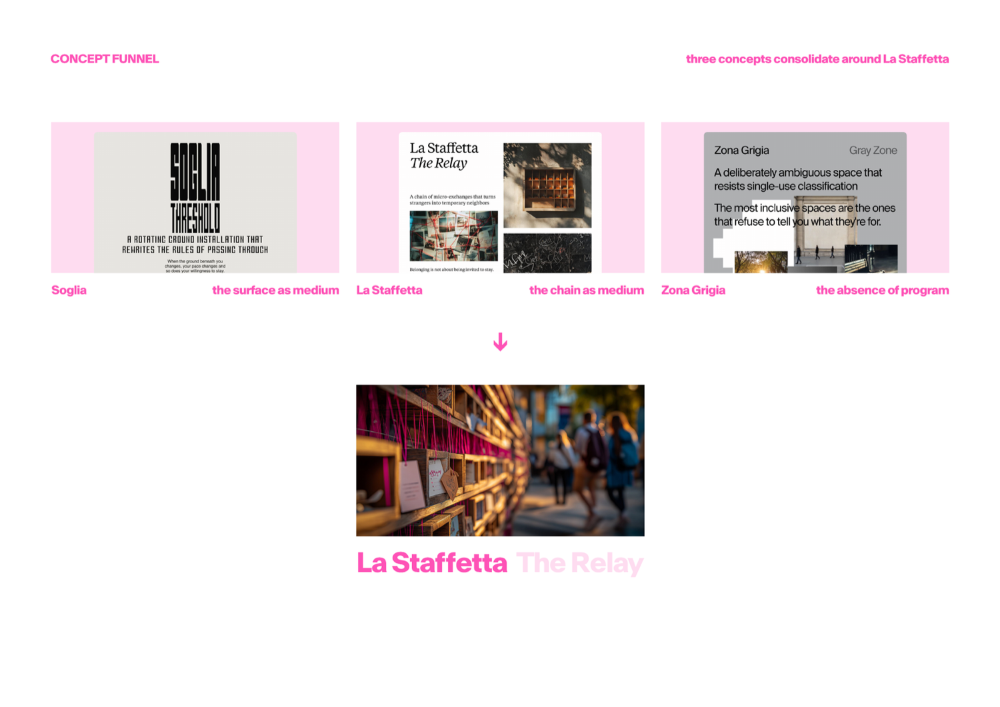
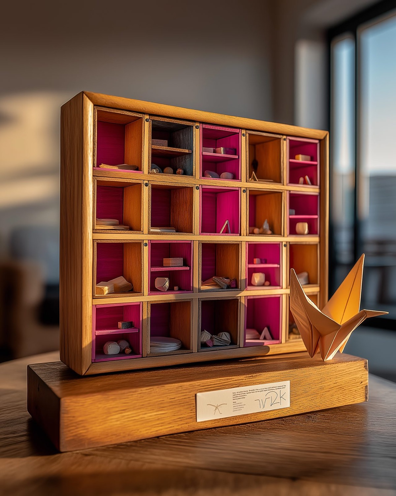

Design for a sense of belonging, coexistence, and informal participation.
Togetherness is not the simple sharing of space. It is the real possibility of being present, visible, comfortable, and involved within it.
Block 01 · The site
The Ovale
A transitional space at Campus Durando. People pass through, sometimes stop, rarely linger.
It offers visibility but not always invitation. It reveals the tension the project turns on: the difference between circulation and belonging.

Block 01 · Personas
Three primary personas
Newcomer
Visible invitations
Reads cues before acting, will not initiate. Needs a first-time signal that says this is for you too.
International Student
Low-threshold
Partial campus literacy. Needs language-light legibility, not improvising in Italian.
Student Organizer
A micro-platform
The anchor persona. Needs somewhere to initiate in public without booking or permitting it.
Block 01 · Reference cases
Three cases, one reading
Kiosk of Reciprocity
Milan 2024
A small, mobile, open node turns passing space into a place of encounter.
Regine di Periferia
Milan 2024
Legitimacy is built through participation, not delivered as a finished object.
Kiosk of Solidarity
Berlin 2023
When a node carries content, it becomes infrastructure rather than furniture.
Small, temporary, visible beats large, permanent, generic. The object must carry content. Participation precedes form.
Block 01 · Direction
Transitional spaces must create a greater sense of belonging, encouraging people to stay.
Block 02
Concept Generation
Three concepts narrowed to one.

Concept funnel. Soglia and Zona Grigia narrow to La Staffetta on four criteria.
Block 02 · The idea
La Staffetta
Small wooden exchange stations in the Ovale. Leave something, take something. The catch is the link: what you take comes with a prompt connected to what the previous person left.
Two strangers, who never meet, in conversation through a third thing.

Block 02 · Lineage
A local lineage: BO LEGGE
TIUS students ran a bookcrossing installation at the same Bovisa campus in 2013 and 2014. La Staffetta inherits its grain and adds the link. It extends the school's own tradition rather than importing a foreign one.
Point the app at the cabinet and the chain spools into view. Each cubby is tagged with what a stranger left and the prompt that traveled with it.
A working prototype, not a concept mockup.
La Staffetta · AR LIVE
Block 03 · Feasibility
It could be built
A one-cabinet pilot sits within a student and DESIS Lab budget. Larch suits Milan's climate, Polimi can fabricate the parts, and the campus maintenance model already exists. Building it is not part of the brief. Naming what it would take keeps the proposal honest.
Democracy, Togetherness and Civicness
Belonging is not about being invited to stay. It is about having a reason to return.
Thank you
Efe Eren Can Bakır with the TIUS course team: Ambra Borin, Elena Giunta, Marco Biferale Polimi DESIS Lab · School of Design · Politecnico di Milano